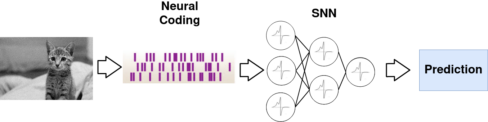
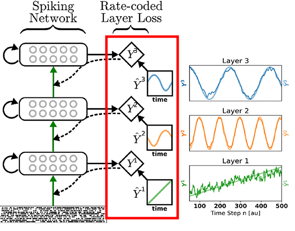
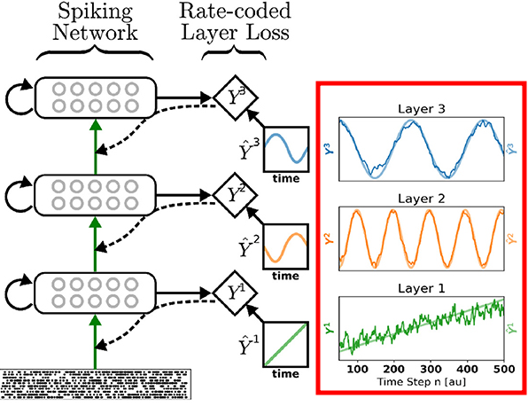
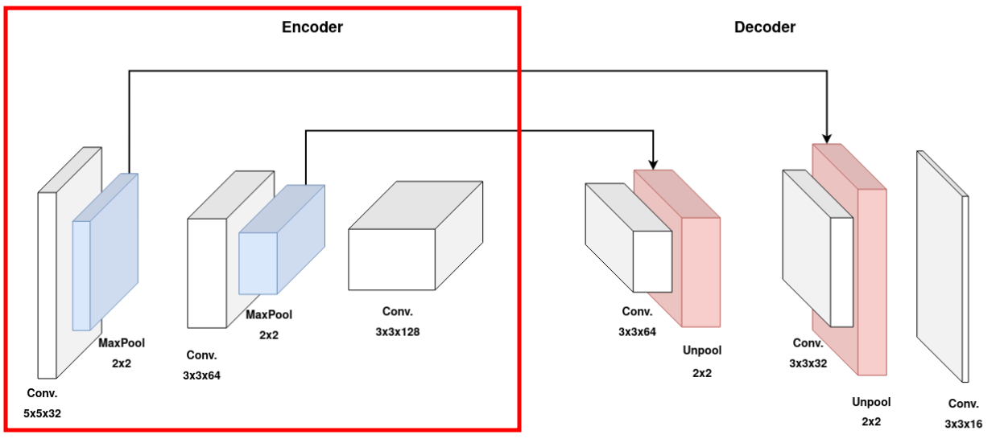
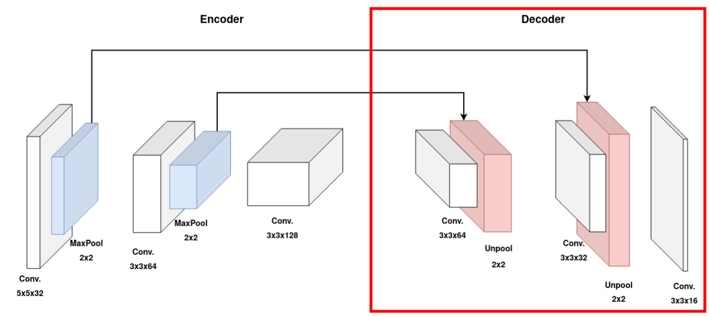

Deep Spiking Convolutional Neural Network for Single Object Localization Based On Deep Continuous Local Learning
Sami BARCHID José MENNESSON Chaabane DJÉRABA

Deep learning
- State-of-the-art in almost all Computer Vision and Machine Learning tasks
- Growing computational, memory and energy costs

Spiking Neural Networks (SNNs)
- Third-generation of AI [Maass1997]
- Spiking neurons: strongly inspired by the neurons of our brain
- Implementable on low-power neuromorphic hardware [Davies2018]
- A potential solution
Challenges
- Performance still behind Artificial Neural Networks (ANNs)
- Spiking neurons are not differentiable [Kaiser2020]
- No backpropagation
Targeted Task
- Single Object Localization using static image
- First step towards modern computer vision tasks using SNNs with static images
- Requires deep architecture design
- Proof-of-concept experiments
SNNs FOR COMPUTER VISION
Common process

Definition
- An SNN consists of spiking neurons that communicate asynchronously through discrete spatio-temporal events called spikes.
- Leaky Integrate-and-Fire (LIF) neuron model
Definition
- An SNN consists of spiking neurons that communicate asynchronously through discrete spatio-temporal events called spikes.
- Leaky Integrate and Fire (LIF) neuron model
Definition
- An SNN consists of spiking neurons that communicate asynchronously through discrete spatio-temporal events called spikes.
- Leaky Integrate and Fire (LIF) neuron model
Definition
- An SNN consists of spiking neurons that communicate asynchronously through discrete spatio-temporal events called spikes.
- Leaky Integrate and Fire (LIF) neuron model
Definition
- An SNN consists of spiking neurons that communicate asynchronously through discrete spatio-temporal events called spikes.
- Leaky Integrate and Fire (LIF) neuron model

Definition
- An SNN consists of spiking neurons that communicate asynchronously through discrete spatio-temporal events called spikes.
- Leaky Integrate and Fire (LIF) neuron model
Definition
- An SNN consists of spiking neurons that communicate asynchronously through discrete spatio-temporal events called spikes.
- Leaky Integrate and Fire (LIF) neuron model
Image neural Coding
- Definition: converts the numerical values of pixels into spikes.
- No established methods
Image neural Coding
- Definition: converts the numerical values of pixels into spikes.
- No established methods
Image neural Coding
- Definition: converts the numerical values of pixels into spikes.
- No established methods
Running an SNN
- Neuromorphic hardware
- Limited capacity of neurons
- Difficult to access
- Simulation on CPU/GPU
- The continuous dynamics of spiking neurons cannot be run 'as is'
- Need to discretize the continuous dynamics into $T$ timesteps
Learning Approaches
- Unsupervised local learning [Caporale2008]
- Neuromorphic implementation
- No annotation
- ANN-to-SNN conversion [Cao2015]
- Best performance
- Training is still on ANNs
- Adapted backpropagation [Kaiser2020]
- Good performance recently
State of SNN in Computer Vision
- Simple recognition tasks [Falez2019] (e.g. digit recognition)
- Mostly shallow networks
- Lack of work towards complex vision tasks
- Proposed contribution:
- Exploit recent supervised learning approaches to perform complex vision task
Deep Continuous Local Learning
(DECOLLE)
Kaiser, et al. “Synaptic plasticity dynamics for deep continuous local learning (decolle),” Frontiers in Neuroscience, vol. 14, p. 424, 2020
Illustration
 Kaiser, et al. “Synaptic plasticity dynamics for
deep continuous local learning (decolle),” Frontiers in Neuroscience, vol. 14, p. 424,
2020
Kaiser, et al. “Synaptic plasticity dynamics for
deep continuous local learning (decolle),” Frontiers in Neuroscience, vol. 14, p. 424,
2020
Illustration
 Kaiser, et al. “Synaptic plasticity dynamics for
deep continuous local learning (decolle),” Frontiers in Neuroscience, vol. 14, p. 424,
2020
Kaiser, et al. “Synaptic plasticity dynamics for
deep continuous local learning (decolle),” Frontiers in Neuroscience, vol. 14, p. 424,
2020
Illustration
 Kaiser, et al. “Synaptic plasticity dynamics for deep continuous local learning (decolle),” Frontiers in Neuroscience, vol. 14, p. 424, 2020Illustration
 Kaiser, et al. “Synaptic plasticity dynamics for deep continuous local learning (decolle),” Frontiers in Neuroscience, vol. 14, p. 424, 2020Illustration
Kaiser, et al. “Synaptic plasticity dynamics for
deep continuous local learning (decolle),” Frontiers in Neuroscience, vol. 14, p. 424,
2020
Formulation

Formulation

Formulation

Formulation

Formulation

Readout Layers
- A readout layer is attached to each layer
- It produces a bounding box prediction
- A DCSNN $s(\mathbf{I})$ composed of $L$ layers outputs $L$ bounding box predictions
In short, $s(\mathbf{I}) = \{\mathbf{B}_i\}^{L}_1$
Architecture

Architecture
Architecture
Architecture
Output Conversion Strategy
- DECOLLE = online learning
- An output prediction is produced for each of the $T$ timesteps
- One prediction for each readout layer
Which prediction should we choose?
Output Conversion Strategy
- Hierarchical representation of successive layers
- Keep the prediction of the last layer, $\mathbf{B}_L$
- A rate-coded image delivers its total information after the $T$ timesteps
- Keep the prediction of the last timestep
Experiments
Oxford-IIIT-Pet dataset
- $176 \times 240$ dimension
- Training split: 6000 images
- Testing split: 1349 images
Results
$63.2$% mIoU

- Most object are well-localized ($55$ to $75$% mIoU)
- Small objects are poorly localized ($\le 15$% mIoU)
Hypotheses
- Common data imbalance problem
- Most images are close-up pictures of pets
- The network does not generalize to rare small examples
- Output Conversion
- Loss of information when using the proposed output conversion (i.e. last prediction of last layer)
Conclusion and Perspectives
Thanks!
References
- [Davies2018]: Davies, Mike, et al. "Loihi: A neuromorphic manycore processor with on-chip learning." Ieee Micro 38.1 (2018): 82-99.
- [Maass1997]: W. Maass, “Networks of spiking neurons: the third generation of neural network models,” Neural networks, vol. 10, no. 9, pp. 1659–1671, 1997.
- [Kaiser2020]: Kaiser, et al. “Synaptic plasticity dynamics for deep continuous local learning (decolle),” Frontiers in Neuroscience, vol. 14, p. 424, 2020.
- [Caporale2008]: N. Caporale and Y. Dan, "Spike timing-dependent plasticity: a Hebbian learning rule" Annu. Rev. Neurosci., vol. 31, pp. 25–46, 2008.
- [Cao2015]: Y. Cao, et al. “Spiking deep convolutional neural networks for energy-efficient object recognition,” International Journal of Computer Vision, vol. 113, no. 1, pp. 54–66, 2015.
- [Falez2019]: P. Falez, et al. "Multi-layered spiking neural network with target timestamp threshold adaptation and stdp," in 2019 International Joint Conference on Neural Networks (IJCNN). IEEE, 2019, pp. 1–8.